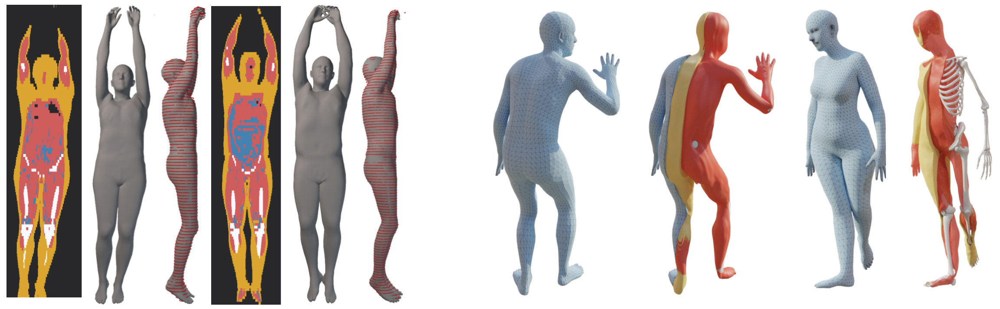
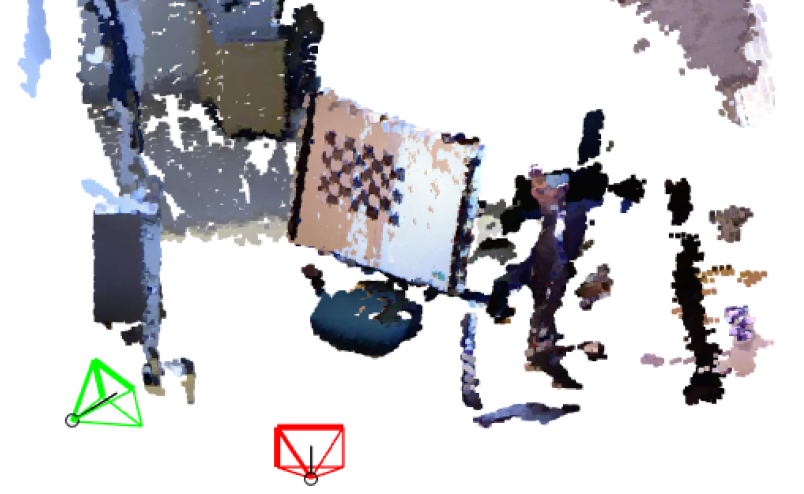

|
I am a Ph.D. student at the Perceiving Systems department of the Max Planck Institute for Intelligent Systems supervised by Sergi Pujades and Michael J. Black, through the IMPRS-IS Program. During the winter of 2023 I was an intern at Stanford in The Movement Lab, working with Karen Liu and Scott Delp. Prior to joining PS, I worked for 3 years as a research engineer in The FabLab of Inetum France, working on real walking in VR. I did my Master Thesis at BBC R&D in London, under the supervision of Florian Schweiger and Graham Thomas. I also was fortunate to visit the lab MORPHEO at Inria Grenoble and work with Edmond Boyer and Julien Pansiot. |
{kind=link}
|
|
My research interests revolve around statistical shape model, graphics, and learning from medical data. In my PhD I am working on inferring the bones' geometry, and the fat and muscle volumes given the external shape of the body. |
|

|
Marilyn Keller, Vaibhav Arora, Abdelmouttaleb Dakri, Shivam Chandhok, Jürgen Machann, Andreas Fritsche, Michael J. Black, Sergi Pujades CVPR 2024 [Paper] [Supplementary] [Video] [Code (to come)] [Poster (to come)] [Dataset]
[bibtex]
@inproceedings{Keller:CVPR:2024,
title = {{HIT}: Estimating Internal Human Implicit Tissues from the Body Surface},
author = {Keller, Marilyn and Arora, Vaibhav and Dakri, Abdelmouttaleb and Chandhok, Shivam and Machann, Jürgen and Fritsche, Andreas and Black, Michael J. and Pujades, Sergi},
booktitle = {Proceedings IEEE/CVF Conf.~on Computer Vision and Pattern Recognition (CVPR)},
month = jun,
year = {2024},
month_numeric = {6},
pages = {?}
}
We leverage the shape of the body surface to infer the 3D location of subcutaneous adipose tissue, lean tissue, and long bones. |

|
Marilyn Keller, Keenon Werling, Soyong Shin, Scott Delp, Sergi Pujades, C. Karen Liu, Michael J. Black SIGGRAPH ASIA 2023 Honorable Mention for Best Paper [Paper] [Supplementary] [Code]
[bibtex]
@inproceedings{keller2023skel,
title = {From Skin to Skeleton: Towards Biomechanically Accurate 3D Digital Humans},
author = {Keller, Marilyn and Werling, Keenon and Shin, Soyong and Delp, Scott and Pujades, Sergi and C. Karen, Liu and Black, Michael J.},
booktitle = {ACM ToG, Proc.~SIGGRAPH Asia},
month = dec,
year = {2023},
}
We learn SKEL, a model that upgrades SMPL with more anatomical degrees of freeedom. |

|
Marilyn Keller, Silvia Zuffi, Michael J. Black, Sergi Pujades CVPR 2022 [Paper] [Supplementary] [Video] [Code] [Poster]
[bibtex]
@InProceedings{Keller:CVPR:2022,
title = {{OSSO}: Obtaining Skeletal Shape from Outside},
author = {Keller, Marilyn and Zuffi, Silvia and Black, Michael J. and Pujades, Sergi},
booktitle = {Proceedings IEEE/CVF Conf.~on Computer Vision and Pattern Recognition (CVPR)},
month = jun,
year = {2022},
month_numeric = {6},
pages = {20492-20501}
}
We learn to infer the skeleton mesh from the external appearance. |

|
Marilyn Keller, Marcell Krall, James Smith, Hans Clement, Alexander M. Kerner, Andreas Gradischar, Ute Schäfer, Michael J. Black, Sergi Pujades MICCAI 2023 [Paper] [Supplementary] [Poster] [Code]
[bibtex]
@inproceedings{Keller:humerusplate:2023,
title = {Optimizing the {3D} Plate Shape for Proximal Humerus Fractures},
author = {Keller, Marilyn and Krall, Marcell and Smith, James and Clement, Hans and Kerner, Alexander M.
and Gradischar, Andreas and Sch{ä}fer, Ute and Black, Michael J and Weinberg, Annelie and Pujades, Sergi},
booktitle = {International Conference on Medical Image Computing and Computer-Assisted Intervention (MICCAI)},
pages = {487--496},
month = oct,
year = {2023},
}
We present a method to extract custom implant 3D shapes and generate sets of implant shapes. |
 
|
Di Meng, Marilyn Keller, Edmond Boyer, Michael J. Black, Sergi Pujades Shape in Medical Imaging [Paper] [Code]
[bibtex]
@inproceedings{spine_model,
title = {Learning a statistical full spine model from partial observations},
author = {Meng, Di and Keller, Marilyn and Boyer, Edmond and Black, Michael and Pujades, Sergi},
booktitle = {Shape in Medical Imaging},
pages = {122--133},
month = oct,
year = {2020},
doi = {10.1007/978-3-030-61056-2_10},
month_numeric = {10}
}
Learning a statisticcal Spine model from partial observations. |

|
Marilyn Keller, Tristan Tchilinguirian IEEE Conference on Virtual Reality and 3D User Interfaces (VR) 2019 [Paper] [Poster]
[bibtex]
@InProceedings{KELLER:IEEEVR:2019,
title = {Obstacles Awareness Methods from Occupancy Map for Free Walking in VR},
author = {Keller, Marilyn and Tchilinguirian, Tristan},
booktitle = {Proceedings IEEE Conference on Virtual Reality and 3D User Interfaces (VR)},
pages = {1012-1013},
publisher = {IEEE},
month = mar,
year = {2019},
doi = {10.1109/VR.2019.8798260},
month_numeric = {3}
}
Evaluating and comparing different visualization methods to enable real walking in Virtual Reality. |
 |
Marilyn Keller, Frédéric Exposito Proceedings VR 2018 [Paper]
[bibtex]
@proceedings{KELLER:IEEEVR:2018,
title = {Game room map integration in virtual environments for free walking},
author = {Keller, Marilyn and Exposito, Frédéric},
pages = {763-764},
year = {2018},
doi = {10.1109/VR.2018.8446385}
}
We demonstrate a method to enable free walking with an HMD by showing the position of the real obstacles to the user. |
|

|
Marilyn Keller Master Thesis [Thesis]
[bibtex]
@masterthesis{keller:masterthesis:multicam,
title = {Setup of a capture system consisting of multiple
video and depth cameras},
author = {Marilyn Keller},
year = 2016,
month = {August},
school = {Karlsruhe Institute of Technology (KIT)}},
Setting up a real time multi camera setup, made from several color and depth camera. We encode the scene in a compact way and render it in unreal engine. |
|
|